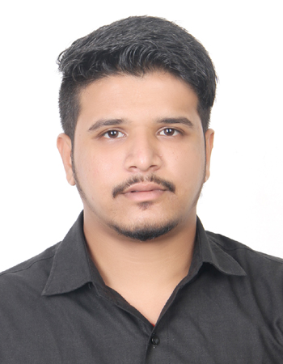

Chandrakant Panjal
Surat, Gujarat | +91-8347704636 | panjalchandrakant@gmail.com
LinkedIn
GitHub
Career Objective
I have excellent potential to work in a challenging and dynamic environment and very much enthusiastic to work with a
diverse group of people and enhance my professional skills. I am ready to upgrade my skills with time in order to excel
my career growth. I have good analytical skills and leadership skills which will make me stand strong in this field.
Technical Skills
- Microsoft PowerBI
- Python
- Python Automation
- Microsoft SQL
- Microsoft Excel
- Microsoft Office
- Database Management
- HTML
- Tableau
Non-Technical Skills
- Leadership
- Time Management
- Communication
- Decision Maker
- Team Player
- Self-Motivated
- Adaptability
Education
- Vertocity
- Data Science
- Trained and Certified in Microsoft Excel, Microsoft SQL, Microsoft Power BI, Python, Tableau
- Soft skills training to improve communication skills
- Gujarat Technological University
- Bachelor's in Mechanical Engineering
- CGPA: 72%
- Vice-captain for the final year cricket team (2016)
- Participated in Mech Quiz held at State Level Technical Fest (2015)
- Participated in GTU Youth Fest XITIJ (2015)
- Part of Personality Development Programme (2013)
- Participated in All India Essay Writing competition (2012) and awarded certification
- Gurukul Vidyapith V.T. Choksi English Medium
- Class XII
- Percentage: 79.07%
- Participated in Elocution competition and Singing competition which helped to let go stage fear
- Had been volunteer for many events held
- Gurukul Vidyapith V.T. Choksi English Medium
- Class X
- Percentage: 80.31%
- Participated in many Drawing competitions and National Science Olympiad exams
- Had been appointed as class representative to be a bridge between students and teachers
Achievements
- Qualified Gate (2018) with 613 score
- Scored 305 in GRE(2016) & 6.5 in IELTS(2016)
Languages
- English
- Hindi
- Gujarati
- Telugu
Hobbies
- Trekking
- Travelling
- Cooking
Work Experience
- Yantram Medtech Pvt Ltd
- Working as Data Scientist
- Appointed as Manager
- Contributor in ISO:13485 certification
- Represetated the company at IIT-Kanpur Expo
- Self-Employed
- Worked as Technician in Textile Mill companies in Surat, Gujarat
- Worked as Home Tutor for Maths
- Simultaneously had been preparing for Indian Engineering Services exam conducted by UPSC
- Mathematics Faculty
- Beta IIT NEET Academy, Surat
- Joined as Mathematics Faculty for class VI to class X
- Taught the students about the course as well as prepared them for competitive exam
- Within 2 months of joining, I was also appointed as Head of Department for Mathematics